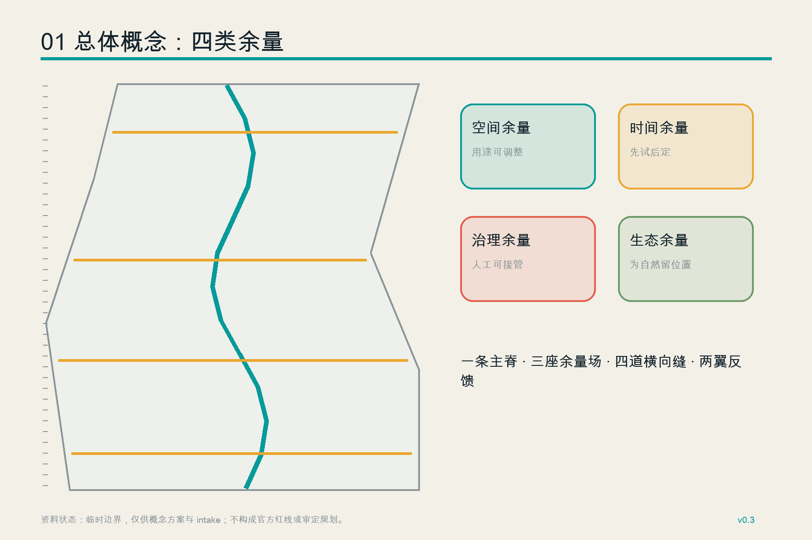
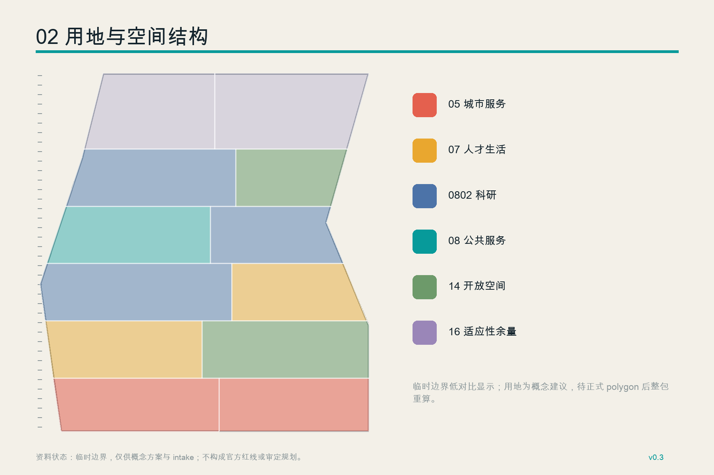
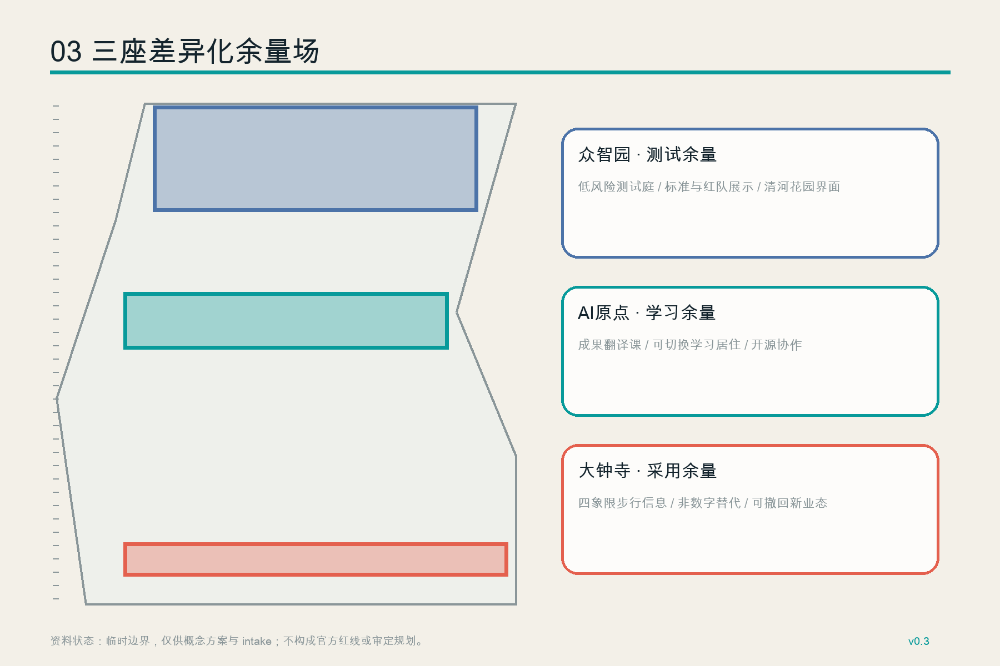
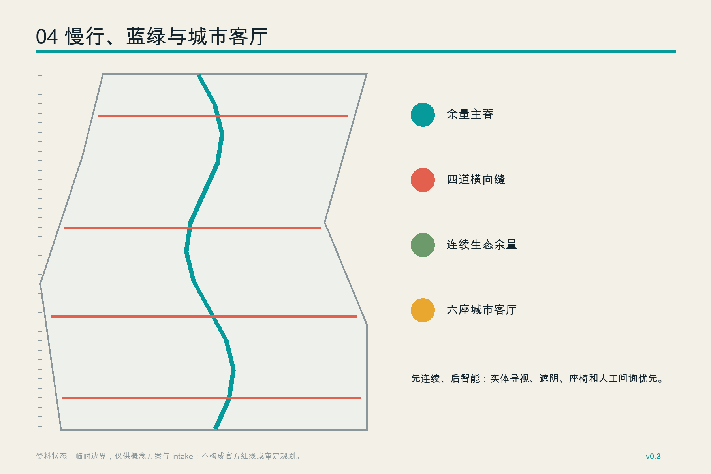
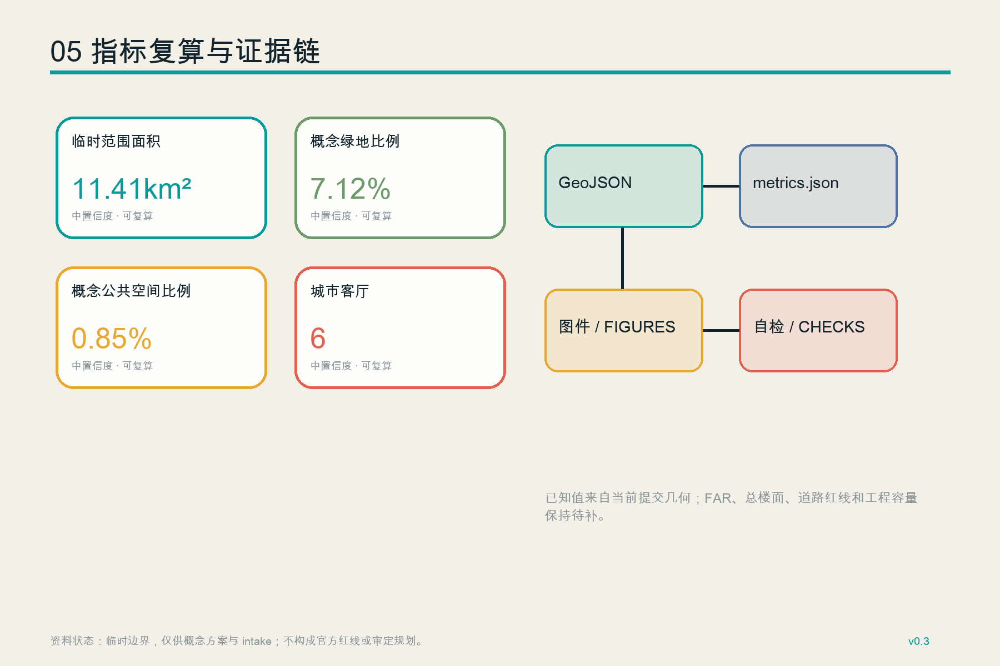

京张余量 / JING-ZHANG HEADROOM：为不确定性预留空间的 AI 创新带
以空间、时间、治理、生态四类余量组织一条可校准、可人工接管、可退出的 AI 创新带；所有空间建议均基于临时边界并待官方资料到位后整包复算。
京张余量 / JING-ZHANG HEADROOM
为不确定性预留空间。Make room for what AI cannot yet know.
设计依据与资料清单
本方案把“知道什么”和“不知道什么”同时画进城市设计。公告确认了 43.6 平方公里统筹研究范围、约 11.4 平方公里总体设计范围、368.4 公顷重点区域和三处片区任务；仓库尚无可验证坐标系的官方精确红线、控规条件、道路断面、现状建筑和权属底数。因此，GeoJSON 采用仓库维护的临时粗略 polygon，只用于生成、讨论、图面和入口自检，不把面积拟合误写成官方红线。来源 来源 深度
资料链分为三层：官方公告和本地标准快照支撑任务与专业语言；任务书支撑 Agent 六项必答内容；临时边界只支撑 provisional intake。中央来源登记表与事实包用于检查用途边界，不创造新的权威性。来源 来源 来源

SITE_BOUNDARY 和三处 KEY_AREA 均保持 official_boundary=false。当官方 CAD/GIS/PDF 到位时，需要替换边界并同时重算用地、建筑、慢行、绿地、公共空间、分期和全部指标，而不是只改一条线。空间数据 空间数据 指标
三层范围工作框架
“京张余量”把三层范围组织成三种决策尺度：统筹研究范围负责产业与区域协同，总体设计范围负责连续公共空间和更新结构，重点区域负责可被专业团队接手的空间原型。四类余量贯穿三层：空间余量允许用途调整；时间余量允许先试后定；治理余量保留人工接管和非数字替代；生态余量为连续绿地、雨洪和舒适性深化留出位置。标准 深度 深度
总体结构不是另一条伪红线，而是一条“余量主脊、三座余量场、四道横向缝、两翼反馈回路”。主脊沿京张遗址公园形成步行骑行和文化阅读线；三座余量场分别承接北部测试、中部学习转化、南部城市采用；横向缝把东西两侧日常生活接回走廊；中关村科技服务翼提供法务、资金、标准与人才服务，小月河场景赋能翼把真实使用反馈送回研发端。空间数据 空间数据

统筹研究范围产业与未来城市研究
六个国际与国内案例只提取机制，不复制规模或政策：Kendall Square 提醒创新区必须同时拥有社区、住房和公共空间；one-north 展示 work-live-play-learn 与分区协同；Mila/Mile-Ex 展示开放科学、人才与技术转移共址；Paris-Saclay 展示轨道站区、实验室、住房和第三空间的混合；张江科学城强调“科学、产业、城市”融合及动态评估；河套强调跨区域规则协同、中试转化和专业服务。来源 来源 来源
这些案例转化为六项本地机制：共享小单元降低初创门槛；首层公共界面让研究可被城市看见；住房和日常服务与工作空间同步；测试必须设准入、人工接管和退出；第三空间承接跨机构协作；年度评估公开调整依据。Paris-Saclay、张江和河套仅作为背景比较，不能替代海淀的官方控规或实施决定。来源 来源 来源
品牌主名为“京张余量”，英文名为 “JING-ZHANG HEADROOM”。Logo 方向是一对平行轨线与一个上方开放的框：轨线表示百年京张，开放框表示城市永远保留可修改的上限；四处断口对应空间、时间、治理、生态余量。品牌系统只用自行绘制几何和系统字体，不引用企业商标。标准 深度
总体设计范围城市更新与控规深度城市设计
用地被划为十二个完整、无缝、无重叠的概念单元，分别承载研发、公共服务、人才生活、智能原生业态、开放空间和适应性余量。分类采用仓库给出的国土空间用地代码子集，但每一块都是设计建议，不是已批用地性质。标准 空间数据 深度
建筑图层表达二十二个小尺度“可逆余量原型”，用于说明体量、首层界面和分期关系，不把它们写成现状建筑或确定新建项目。缺少建筑调查、权属、容积率、高度和退线时，拆改留只采用“保留优先、低扰动试用、证据门后更新”的方法；总建筑面积和 FAR 保持待正式数据补齐。空间数据 深度 深度
城市风貌采用“低底座、开放首层、可见维护、材料可追踪”的概念控制语言。具体高度、强度、屋顶和天际线必须由官方控规、文保、航空及工程条件共同确认；当前只提供可供专业团队深化的体量关系。标准 深度
重点区域详细设计
众智园定位为“测试余量场”：花园型研发空间围绕清河界面组织，开放测试庭只承接低风险、可围合、可暂停的端侧设备、机器人与安全评测；标准、红队和治理结果通过公共廊展示。对外交通、河道和工程条件需专项复核。空间数据 深度
北京 AI 原点社区定位为“学习余量场”：近校成果先进入开放评议、技能翻译和小规模试用，再进入孵化与企业服务；人才住房、社区服务、安静学习和夜间协作共享一组可切换空间。任何校园、园区和街区改造都以权属同意和现状调查为前提。空间数据 来源
大钟寺定位为“采用余量场”：轨道站四象限之间设置连续步行导向、非数字信息点和可撤回的智能原生消费原型。企业展示必须同时显示服务边界、人工窗口和退出方式，避免把公共空间变成强制体验场。空间数据 标准

三处朝圣与荣誉节点分别为“余量尺”（公开显示数据状态和场景准入等级）、“开放道岔厅”（记录代码、标准、劳动与纠错贡献）、“百年缓冲庭”（把铁路历史、安静休憩和非数字服务放在同一花园）。它们是概念性公共空间组件，不是已批准建筑或纪念设施。
AI 创新生态、人才画像与 AI+ 场景
六类画像覆盖：高校研究者与学生、初创团队、企业工程师、承担照护责任的居民、老年或残障访客、国际访客与一线服务人员。每类人都拥有“使用、拒绝、求助、人工办理、纠错”的路径；画像不使用个人轨迹，不推断敏感属性。来源 深度
十二张场景卡形成四组余量：产业测试包括开源模型报到、端侧算力快闪庭和机器人低速沙盒；城市服务包括无障碍出行协助、社区服务人工并行台、慢行断点巡检；学习文化包括成果翻译课、京张记忆导览、贡献开放账本；运营包括夜间低扰动协作、公共空间维护助手和全球 Headroom Week。每张卡均写明公共价值、最小数据、人工责任人、非数字替代、暂停条件和资产退出。来源 空间数据
| 场景卡 | 空间载体 | 人工与退出边界 |
|---|---|---|
| S01 开源模型报到（测试） | 众智园安全治理庭 | 人工评审后放行；到期下线 |
| S02 端侧算力快闪庭（测试） | 众智园余量单元 | 能源与安全复核；设备可移除 |
| S03 机器人低速沙盒（测试） | 围合测试环 | 现场监护；异常即停 |
| S04 无障碍出行协助 | 余量主脊 | 保留实体导视与人工问询 |
| S05 社区服务并行台 | 原点社区 | 不强制注册；保留线下窗口 |
| S06 慢行断点巡检 | 四道横向缝 | 只采设施状态；人工派单 |
| S07 成果翻译课 | 原点开放教室 | 明示不确定性与来源 |
| S08 京张记忆导览 | 百年缓冲庭 | 可关闭智能层，保留文字版 |
| S09 贡献开放账本 | 开放道岔厅 | 贡献者可更正、撤回展示 |
| S10 夜间低扰动协作 | 可切换首层 | 噪声与时段人工管理 |
| S11 公共空间维护助手 | 六座城市客厅 | 仅建议工单，不自动执法 |
| S12 全球 Headroom Week | 全线公共路线 | 活动属建议，逐次许可 |
用地、建筑规模与拆改留方案
十二个用地单元完整覆盖临时总体设计边界，边界共享同一组切割线。科研、公共服务、生活、商业、开放空间和留白代码的面积由 GeoJSON 在 EPSG:4548 下复算；它们用于比较设计结构，不用于正式地块审批。指标 指标 指标
公共服务、开放空间和适应性余量单元形成连续支撑，面积同样可复算。官方 polygon 到位后，所有单元必须从新边界重新裁切，不能按当前数值锁定比例。指标 指标 指标
建筑基底仅说明概念原型的占地关系，建筑覆盖率、总楼面和高度不作为已知控制值。现状核查后依次执行四道证据门：确认权属与安全；评估保留价值；比较低扰动改造；最后才讨论拆除或新建。指标 深度
交通、轨道、市政与公共服务设施
交通概念由一条南北步行骑行主脊和四道东西余量缝组成，服务遗址公园连续性、重点区接驳和日常过街。中心线总长度只表达概念网络，不能替代道路红线、工程线位或交通容量结论。指标 空间数据 深度
轨道站点一体化采取“先连续、后智能”：先确认无障碍路径、遮阴、座椅、照明、自行车停放和实体导视，再叠加实时信息与导航。医疗、社保、金融、生活缴费等公共服务场景保留现场指导和人工办理；其他界面也鼓励提供清晰的非数字替代，但不把特定法条泛化为全部场所义务。来源 来源
市政、新型基础设施、消防、防洪、管线和能源负荷仍待专项资料。端侧算力只作为可插拔、可计量、可移除的设施原型，任何容量、供能和管线路径都须专业复核。空间数据 深度

蓝绿空间、公共空间与城市风貌
连续生态余量脊由一条低对比临时边界内的线性绿带和四个放大口袋构成，六座城市客厅与其相邻但不要求完全重合。它们共同提供遮阴、休息、交往、测试缓冲和活动切换的位置；绿地率与公共空间率是本次概念几何的复算值，不是法定控制指标。空间数据 指标 指标
六座城市客厅数量固定在当前设计版本中，用于支撑三片区差异和公共体验路线；正式边界、现状树木、蓝线、文保和慢行断点调查到位后应重新定位。指标 深度
风貌以铁路的尺度纪律和 AI 的可读状态结合：结构真实、设备可见、信息不过载、夜间低眩光、维护入口公开。百年文化不是科技装饰，而是用“里程、道岔、站场、缓冲”解释城市如何面对约束并保留修正能力。标准 来源
更新项目清单、实施政策与分期计划
项目包包括：P01 余量主脊连续性校准；P02 众智园低风险测试庭；P03 原点成果翻译与技能共享屋；P04 大钟寺四象限步行信息系统；P05 六座城市客厅；P06 三处荣誉与朝圣节点；P07 场景准入、暂停和退出台账。每个项目先核数据、权属、安全和运营责任，再决定空间深化。深度 空间数据
三期不是政府承诺或固定工期。第一期是可移除设施、公开校准和三项产业测试；第二期是在权属及工程条件明确后开展适应性更新和网络扩展；第三期在官方边界和专业条件接入后形成长期运营。三期面积只表示当前临时边界内的工作分区。指标 指标 指标
年度运营建议采用“季度校准日、半年开放评审、年度 Headroom Week”。开发者、居民、运营者和专业人员共同检查场景是否仍有公共价值、是否出现排斥或维护负担、是否应扩展、暂停或退出。深度
指标体系、面积复算与合规矩阵
所有已知指标来自提交包自身几何；site_area_sqm 是临时边界复算值，置信度为中，不是公告精确面积。三处重点区数量来自临时 KEY_AREA 要素；总楼面和 FAR 因缺少正式条件保持未知。指标 指标 指标
绿地、公共空间、建筑基底、道路中心线和六座城市客厅都能从相应图层复算，图面与 HTML 只解释这些数据，不另造数值。指标 指标 指标

compliance_matrix.json 覆盖公告 1.3、1.4、1.5 和 agent.1-agent.6；standard_matrix.json 覆盖五项强制依据；design_depth_matrix.json 覆盖十五个 formal 深度项。建筑工程设计文件深度规定尚无可用官方快照，仅作为数据缺口，不声称已经满足其具体条文。标准 深度
风险、版权与合规说明
最高风险是把临时几何、概念指标或活动建议误读为官方结论。其次是缺少现状建筑、权属、文保、道路、市政和公共服务底数。方案通过低对比虚线、provisional_constraint、unknown 指标、人工复核和整包复算触发器降低误读，但这些措施不能替代官方资料。深度 来源
所有 AI 场景以最小数据、用途限定、人工责任、非数字替代、投诉纠错和退出为基本合同。生成式 AI 相关法律来源只在其适用范围内作为治理背景，不据此推定任何服务已经完成备案、安全评估或个案合规。来源
方案图、Logo 方向、HTML 和 PDF 均由本投稿基于结构化数据生成；未使用商业地图瓦片、新闻图片、企业商标或未清权人物肖像。字体与软件依赖说明见 report/copyright_statement.md。本成果是开放共创建议，不替代正式规划，不构成政府审定结论。
本次 v0.3 版本以 GitHub 身份 zhangitit 提交；署名修订不改变空间方案、指标口径或资料边界。
参考资料
本方案的证据链不是文末装饰，而是控制设计强度的输入。官方公告与场地包用于确认三层范围、任务边界和专业表达；面向智能体任务书用于确认六项必答内容、场景方向与开源协作要求。来源 来源 来源
来源登记和事实包用于检查每条资料能支持什么、不能支持什么。它们共同决定了“余量”不是造型主题，而是对资料不完备的空间回应。来源 来源
临时总体与重点区边界只允许生成 SITE_BOUNDARY、KEY_AREA 及其衍生概念几何，所以当前面积、比例、建筑基底和路线长度都属于可复算指标，不得写成法定控制值。六个案例来源只提取混合使用、开放科学、第三空间、跨区域协同和动态评估等机制；其规模、治理结构、政策与绩效不移植到海淀。完整 URL、访问日期、权威等级、可用范围和限制均记录在 sources.json。来源 来源 指标
仍缺官方精确 polygon、控规、现状建筑、权属、道路断面、市政容量、文保、消防、防洪和设施服务底数。上述任一关键资料到位，都应触发几何裁切、指标计算、三张矩阵、双语图件、HTML 和 PDF 的整包复核；在此之前，参考资料只能支撑概念比较与审查入口，不能支撑审批、投资或工程结论。